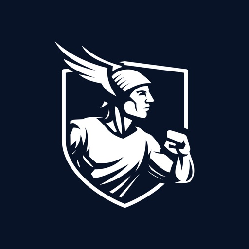

Recent Android reviews keep asking for Dyflexis shifts to export into Google Calendar or iCal.
Useful next stepMap the shift-change event path, then test one read-only calendar feed with revocation.

Dyflexis workforce briefSaw you are hiring a Backend Engineer (PHP) while Dyflexis scales products across Europe and toward the US. Here is how we would help protect reliability, data flow, and delivery pace.
Recent Android reviews keep asking for Dyflexis shifts to export into Google Calendar or iCal.
Useful next stepMap the shift-change event path, then test one read-only calendar feed with revocation.
Capterra and Trustpilot mention worked-hours totals, timer state, and post-update behavior.
Useful next stepCreate a time-registration test matrix before adding more payroll or mobile changes.
A six-week pilot focused on one backend path, with weekly demos and Dyflexis keeping product and architecture control.
Map calendar, payroll, and clocked-hours data paths from mobile actions to Symfony services and MySQL records.
Build a small iCal export pilot with clear permission rules and tests around shift changes.
Harden the time-registration path with Redis cache checks, race-condition tests, and incident playbooks for safer releases.
Add GitLab CI checks and Playwright API tests so six-week cycles ship with less regression risk.

Elinext supplied a tech lead, backend, frontend, QA, DevOps, design, and PM for a payroll web platform.
Read case studyA web system for vacation, sick leave, HR roles, approvals, identity, and daily employee self-service.
Read case study